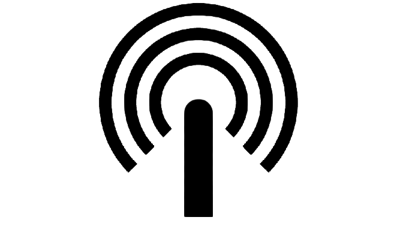
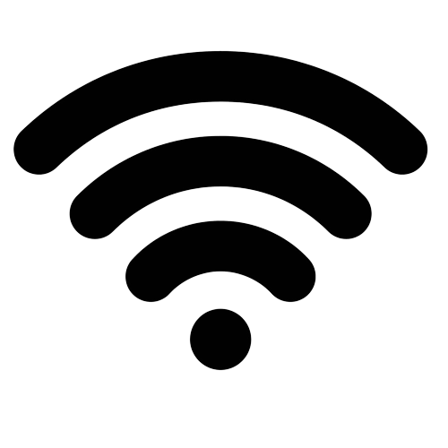
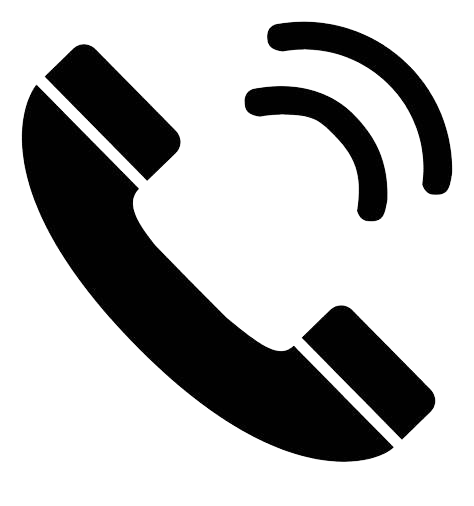
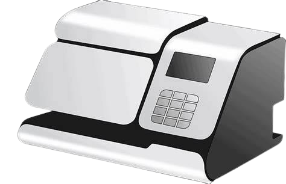

Services Forfaitaire

Accès Internet
Les ligues disposent d'un accès Internet mutualisé que la M2L loue à un prestataire extérieur.

Accès Wifi
Dans tous les espaces, un réseau Wifi "visiteurs" est disponible, avec une clé WPA renouvelée régulièrement et communiquée aux ligues. Ce réseau ne permet que l'accès à Internet.

Téléphonie
Dans les bâtiments anciens A et B, les salles et bureaux sont équipés de prises de téléphone analogiques. La M2L y fournit les combinés téléphoniques. Dans les bâtiments neufs C et D, l'équipement téléphonique est de type VoIP. La M2L loue des postes téléphoniques IP aux ligues.
Services Imprimerie

Affranchissement
Une machine à affranchir permet un affranchissement rapide et en nombre. Cette prestation est facturée aux ligues au coût de l'affranchissement. Chaque mois, on relie la machine à affranchir à une imprimante pour obtenir une liste de codes de gestion correspondant aux ligues associés à une quantité et un type d'affranchissement. La prise en compte de ces informations permet au CROSL d'éditer des factures.
Impressions en volume et en qualité imprimerie
Les ligues disposent de la possibilité d'imprimer sur des ressources d'impression numériques connectées situées dans le local reprographie du rez-de-chaussée dont l'usage fait l'objet d'une facturation à prix coûtant. Un système de comptage situé sur le serveur d'impression permet au CROSL d’effectuer une facturation mensuelle auprès des ligues.